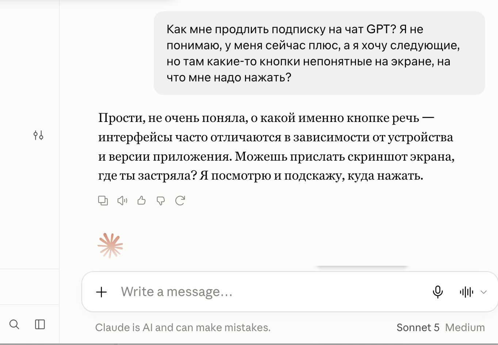
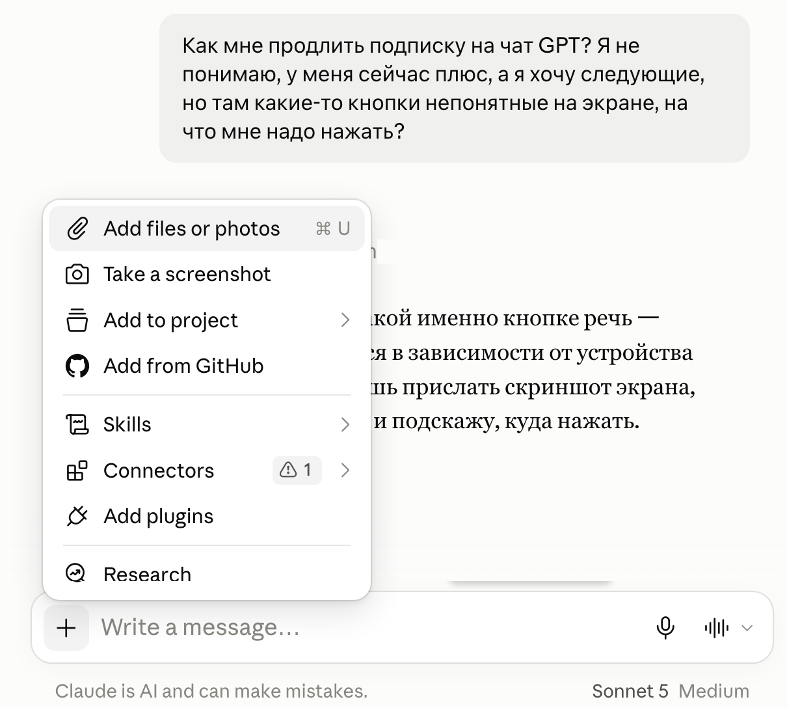
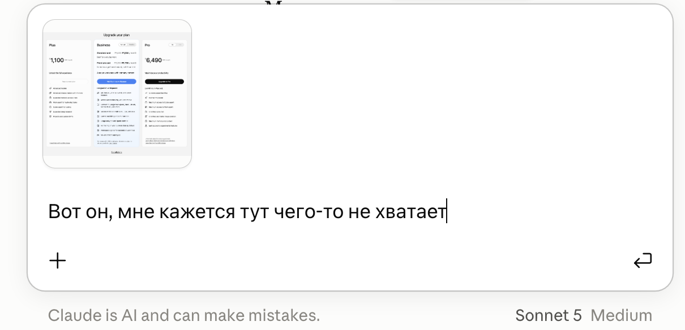
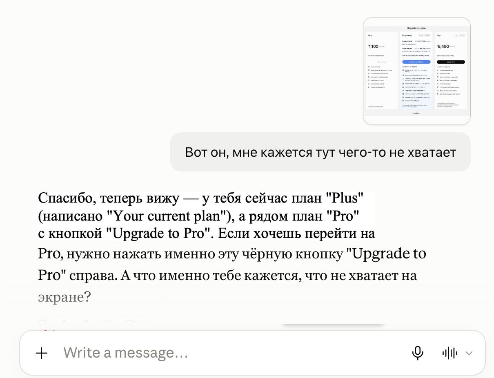

Claude.ai · Скриншот в чате
Скриншот вместо объяснений: покажи Клоду экран, где застрял
Ты на незнакомом сайте или в настройках своего кабинета. Всё на чужом языке, надо продлить подписку или хотя бы понять, о чём речь, и непонятно, куда нажимать. Объясняешь словами - Клод находит официальную справку сервиса и пересказывает её, а у тебя своя версия приложения и своё устройство. Ты отвечаешь «у меня такой кнопки нет», и начинается выяснение: телефон или компьютер, какая система, что за приложение. Один скриншот отсекает этот круг целиком
Откуда берётся круг вопросов
Почему словами не выходит
Клод не видит твой экран. Он берёт официальную справку сервиса - ту, которую находит, - и описывает кнопки по ней. Справка не всегда свежая и написана под какое-то одно устройство, а у тебя своя версия приложения, свой язык, свой тариф, телефон вместо компьютера. Названия кнопок он даёт по документации, а не по тому, что у тебя перед глазами
И промахивается он чаще не в названии, а в месте. Название ещё можно угадать по смыслу: написано «Подписка», а у тебя «Тарифы» - сообразишь. А когда он говорит «в правом верхнем углу», а у тебя эта настройка спрятана внутри пункта в настройках, на третьем уровне, сам ты её не найдёшь никогда. Ты честно смотришь в правый верхний угол, там ничего нет, и вы ходите по кругу
Тогда он начинает уточнять: какая система, с чего работаешь, до какой версии обновлялся. Вопросы по делу, но ты пришёл не за ними - ты хотел узнать, куда нажать. Скриншот снимает их одним движением, потому что на картинке уже видно и версию, и язык, и тариф, и то, где у тебя что лежит

Правило простое: видишь экран, который надо объяснить словами дольше одного предложения - снимай скриншот
Четыре действия
Как показать Клоду экран
Весь маршрут - четыре шага, и три из них ты уже умеешь. Новое только одно: где в меню лежат пункты про файл и про съёмку экрана
1. Сними то, где застрял
Снимай весь экран или окно целиком, не вырезай «только кнопку». Клоду нужны соседние надписи: по ним он понимает, что это за страница, на каком она языке и какой у тебя тариф. Вырезанный фрагмент оставляет его без этих подсказок
На Маке снимок области - Cmd + Shift + 4, на Windows - Win + Shift + S. Скриншот с телефона годится так же: он же картинка
Результат: есть картинка того места, где ты застрял, вместе с окружением
2. Нажми плюс под чатом
Плюс стоит слева под строкой, где ты пишешь сообщение. В открывшемся меню два верхних пункта - как раз про картинки: Add files or photos прикрепляет готовый файл, Take a screenshot снимает экран сразу из Клода, без поиска файла по папкам

Результат: картинка стоит над строкой ввода, значит прикрепилась
3. Напиши словами, что не выходит
Скриншот без вопроса Клод разбирает на свой вкус: опишет, что видит, и предложит первое разумное. Поэтому вместе с картинкой одной фразой скажи, чего ты хочешь. Длинно не надо - на картинке уже всё видно

Результат: Клод отвечает про то, что действительно на экране: называет надписи, цену, кнопку и место, где она стоит
4. Уточняй по тому же скрину
Картинка остаётся в чате, второй раз её прикреплять не надо. Спрашивай дальше обычными словами: «а что даёт вторая кнопка», «это точно та, что справа», «переведи весь экран». Если после нажатия открылось новое окно - снимай новый скриншот, чтобы Клод шёл за тобой по шагам

Результат: разговор идёт по твоему экрану, а не по догадкам о нём
Можно копировать
Что писать вместе со скриншотом
Четыре фразы под частые ситуации. Прикрепляешь картинку, вставляешь фразу, отправляешь
Куда нажать на этом экране
Вот мой экран. Я хочу [что нужно сделать], но не понимаю, куда нажимать. Назови кнопку так, как она подписана на картинке, и скажи, где именно она стоит. Если нужной кнопки на этом экране нет, так и скажи
Перевести и объяснить чужой язык
Этот экран не на русском. Переведи всё, что на нём написано, и объясни своими словами, что мне тут предлагают. Отдельно скажи, на что нажимать НЕ надо, чтобы ничего не купить случайно
Разобраться с ошибкой
Вот ошибка с моего экрана. Объясни простыми словами, что она означает и из-за чего появилась. Дай порядок действий: сначала самое простое, что стоит проверить, потом остальное
Сравнить и выбрать тариф
На скриншоте несколько тарифов. Я собираюсь [для чего это нужно]. Разбери, чем они отличаются по существу, и скажи, какого мне хватит и за что я переплачу. Считай только по тому, что видно на картинке, не добавляй от себя
Мелочь, которая сильно помогает: впиши в квадратные скобки свою задачу словами. «Хочу продлить подписку», «хочу отключить автосписание» - и Клод ищет на экране путь именно к этому, а не описывает картинку вообще
Если ответ не по делу
Почему Клод отвечает мимо
Бывает, что скриншот отправлен, а ответ всё равно общий. Причина почти всегда в самой картинке, и все четыре случая лечатся за одну попытку
Снято слишком мелко
Мелкая картинка - мелкий текст, надписи на кнопках не читаются. Для картинок в справке названа планка: лучше от 1000 пикселей по стороне. Не уменьшай скриншот перед отправкой и не фотографируй монитор телефоном - сними экран средствами системы
Вырезана одна кнопка
По фрагменту без окружения непонятно, что это за страница. Клод отвечает общими словами именно потому, что кроме кнопки ему ничего не видно. Снимай окно целиком
Нет вопроса
Картинка без текста читается как «посмотри и скажи что-нибудь». Одна фраза о том, чего ты хочешь, меняет ответ полностью
Экран не тот
Снято меню, а нужная настройка лежит на другой странице. Тогда Клод честно говорит, что на этом экране нужного нет: открой следующий шаг и сними его
Честные ограничения
Чего скриншот не сделает
Полезно знать заранее, чтобы не ждать от картинки лишнего
Он не нажимает за тебя
Клод в чате смотрит на картинку и рассказывает, куда нажать. Сам он по твоему экрану не щёлкает: кнопки жмёшь ты
Он видит момент, а не процесс
На скриншоте один кадр. Что было до и что будет после нажатия, ему неизвестно, поэтому длинную настройку показывают по шагам: снял, нажал, снял следующий экран
Он может ошибиться в мелком тексте
Сноски и подписи в несколько пикселей читаются с ошибками. Цену, дату и имя тарифа стоит перепроверить глазами по своему экрану, особенно перед оплатой
Про личные данные: на скриншоте экрана видно всё, что на нём открыто - почта, имя, номер карты, чужая переписка. Перед отправкой посмотри, что попало в кадр, и сними лишнее с экрана или закрой
Короткие ответы
Частые вопросы
Сколько картинок можно в один чат
До 20 файлов на чат, каждый до 500 МБ, размер картинки до 8000 на 8000 пикселей. Для скриншотов эти границы недосягаемы: обычный снимок экрана весит меньше мегабайта
Какие форматы подходят
JPEG, PNG, GIF и WebP. Системный скриншот на Маке и на Windows и так получается в PNG, ничего конвертировать не надо
Нужен ли платный тариф
Нет, картинки читает и бесплатный. Лимит расходуется общий, как на обычную переписку
Можно вставить картинку из буфера
Да, скопированную картинку можно вставить прямо в строку чата через Cmd + V, не сохраняя в файл
Есть ли способ ещё быстрее
В приложении Клода на Мак есть быстрый ввод: двойное нажатие Option открывает поле у курсора, там же появляется «Drag to take a screenshot» - выделяешь область, и она сразу прикрепляется к сообщению. На Windows этой возможности пока нет
Откуда факты
Источники
- Claude Help Center: What kinds of documents can I upload - форматы картинок, 20 файлов на чат, 500 МБ на файл, до 8000 на 8000 пикселей, рекомендация от 1000 пикселей и вставка из буфера
- Claude Help Center: Use quick entry with Claude Desktop on Mac - быстрый ввод по двойному Option, съёмка области выделением и то, что это только macOS
- Claude Desktop docs - прикрепление файлов и скриншотов в чат, съёмка экрана и указание Клоду на конкретную кнопку
Бесплатный практикум
Кнопки ты уже нашёл. Дальше - порядок работы
Вот так по шагам ты осваиваешь Claude.ai. А вот как выстроить вокруг него ежедневную работу с нейросетью, чтобы она реально экономила время, - отдельная задача. На Лагере за три дня собирается рабочий порядок вокруг твоего же Клода: как формулировать задачи, чтобы результат не переделывать, как не терять наработки между чатами и в итоге собирать полезное для жизни и твоего бизнеса
Забрать путёвку в ИИ-Лагерь →